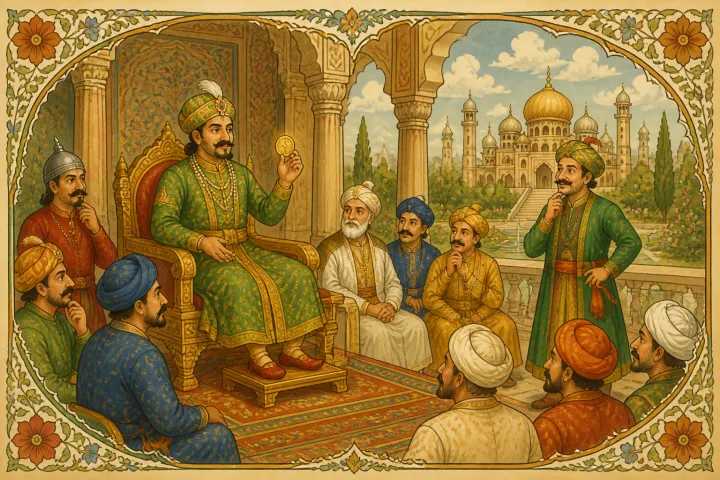
Akbar and Birbal stories are evergreen genres in moral stories for children. The wit and presence of mind of Birbal is something that we all are great fans of. Not only us but the great king Akbar was also a fan of Birbal because of these qualities. And this is what makes the Akbar Birbal combo more interesting too.
By sharing these Akbar and Birbal stories with children, we can create curiosity in their young minds. These Akbar Birbal stories will develop positive thinking, presence of mind, and wit in children that help them solve problems in life at later stages.
Besides, children love to listen to these Akbar Birbal stories as they are short and fun, just the way they want. Akbar Birbal stories make a great idea to add fun to story telling time for kids. They can go well with either playing time with a group of kids or help you to put your kiddo to sleep at night. These Akbar Birbal stories are easy to understand for your child. They will want more and more of these beautiful crisp Akbar Birbal stories.
Here is a compilation of Akbar and Birbal stories for your children and for you too.
Quick Navigation
Gold coin and justice
Once Akbar wanted to check the nature of his subordinates. He posed them a question:
“If I am giving you one gold coin and justice, which one would everyone of you choose?”
Every minister and people standing there answered, “ We want justice, Your Greatness!”
At last, Birbal answered, “ I want a gold coin, jahapanah!”
Surprised Akbar asked, “ Why is it so Birbal? I thought you would ask for justice!”
Birbal replied, “ My Lord, in your kingdom, justice is well served. We have no lack of it. But I am running out of money. So, I would choose the gold coin itself!”
Akbar was both happy and satisfied with the answer. He gave 100 gold coins to Birbal. Everyone appreciated the sense of Birbal. They understood why the King loved him immensely.
Moral of this Akbar Birbal story: Always make a wise choice when you have options.
Crows in the kingdom
This is another famous Akbar Birbal story.
One evening, Akbar and Birbal were taking a stroll in the royal garden. The crows were heading to their homes in groups. The sight was pleasant to see and relax.
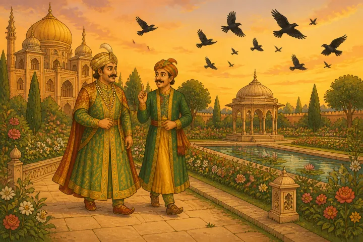
Then, King Akbar got a doubt. He wanted to check Birbal’s wit on that beautiful evening. He asked Birbal, “ How many crows are there in our kingdom, Birbal?”
Birbal understood that the king is testing his wit. He took a moment and answered, “ My King, there are 69995 crows in our kingdom.”
Akbar was surprised. “ How do you know? What if there are more or less than this number?”, he asked Birbal.
Birbal replied with obedience, “ My Lord, you can get them counted. If there are more than the said number, it means that crows from other kingdoms have come to visit their relatives in our kingdom. Similarly, if there are less than the said number, it means our crows have gone to their relatives in the other kingdoms!”
King Akbar could not stop himself from appreciating Birbal’s wit and presence of mind. Both burst into laughter on that beautiful evening.
Moral of this Akbar Birbal story: The presence of the mind can solve any problem.
Stick and the thief
This famous Akbar Birbal story has many versions too.
It happened once that there was a theft in one of the citizens of the kingdom ruled by the emperor Akbar. They rushed to the king to help them find the thief and do justice for them.
Birbal summoned all the thieves in the kingdom and handed them over sticks of equal size. He said, “ These sticks are magical, they will grow by one inch more by tomorrow sunrise, when they are with the actual thief. So, you all bring these sticks tomorrow to the court and show to us. ”
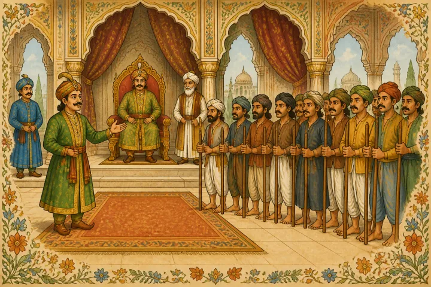
They all left for their homes. But the actual thief could not sleep at all. He was scared where the stick would grow in size and get him caught by the king.
Looking at his agony, the thief’s wife suggested, “ why don’t you break the stick by two inches? So that by tomorrow it will be normal in length!! ”
The thief was more than happy to listen to this advice. He immediately cut the stick carefully by two inches. He wrapped it in a cloth and slept peacefully.
The next day, he took the stick along with the wrapped cloth to the court. When Birbal asked all the thieves to show their sticks, everyone showed theirs to the public. The actual thief also did it.
To his surprise, the stick did not grow! It was shorter by two inches than it was yesterday when Birbal gave it to him.
Then Birbal identified that he is the thief and handed them to the soldiers. He said, “Maharajah, his guilty consciousness only got him caught!!”
Moral of this Akbar Birbal story: Guilty consciousness will never let you stay in peace. Any one who does bad things will get caught some day for sure, though it might appear that they escaped for time being.
Well and water
This Akbar Birbal story is less heard of.
Once a rich man sold his well to a poor farmer who was in need of water for his fields. But the rich man is greedy. He did not want to let go of the water. So, the next morning, he turned up at the well and started drawing water.
He said to the poor farmer, “ I only sold the well, not the water! The water is mine and you cannot use it.”
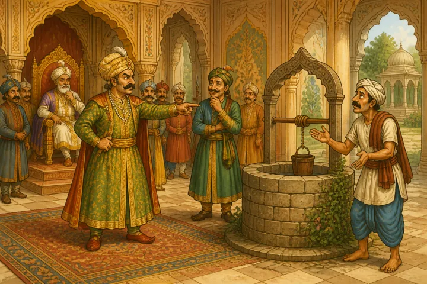
The farmer was puzzled. He knows that he cannot fight the rich man. He approached King Akbar and requested him for justice.
Akbar ordered Birbal to take care of this matter. The next day both the rich man and the farmer were called to the court.
Birbal said, “ You rich man, you are kind enough to sell the well to the farmer who needed water. But your old water is still in the well. So you empty the well so that this farmer will fill with his water. Or you pay him tax as your water is being stored in his well.”
The rich man understood that he was caught by Birbal. He apologized to the farmer, Birbal, and the King and left the place.
Moral of this Akbar Birbal story: Greed will never bring good fruits.
Real king from duplicates
This is also a rare piece from Akbar Birbal stories.
We all know that Birbal is close to King Akbar like no other ministers. So Akbar wanted to test how good Birbal knew him.
He called many men from among his court who can look exactly like him in height and personality. He made them wear the same dress as he wears.
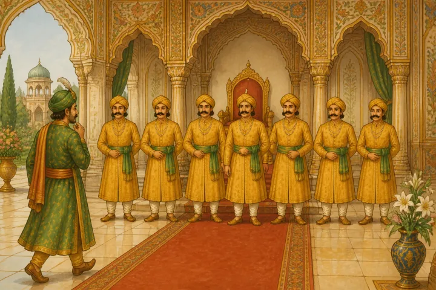
The next morning, when Birbal entered the court, he was stunned. There are many people looking the same as the Great King! Who should he bow to now? This was his confusion.
But Birbal thought carefully and observed with a sharp mind. Then, after a moment, he went to one of the persons dressed as the King and wished him, “ Very Good Morning my Great Lord!”
That person is none other than the real King. Akbar was himself surprised. He asked, “ How could you identify me from among my duplicates?”
For which Birbal replied, “ Oh Great King, one may dress like a king. But the confidence of a king, only a real king can display. I looked for that confidence in their eyes and body language!”
Moral of this Akbar Birbal story: A great leader is identified with his confidence.
Birbal khichdi
Most of us might have known this Akbar Birbal story.
It was the winter season in this Akbar Birbal story. The climate was chilling and the lakes were filled with chilled water in the Kingdom of Great Akbar.
On such evening, both Akbar and Birbal were taking a walk along the countryside. They came across a lake that is in such chilling condition. The water is too cool even to touch.
Then, the king said, “ I am not able to even touch this water. It is too cold! No one can even lay a foot in this water!”
For this Birbal replied, “ King, I can bet someone will definitely dare to stand in this lake if you offer them money.”
Then King made an announcement in that village saying, “ whoever will stand in that lake tonight till sun rises will get 1000 gold coins”
A poor farmer heard this announcement. He was in dire need of money. So, he accepted the challenge and stood in the chilling water shivering the whole night. All the night soldiers kept watching him.
The next day the soldiers presented the poor farmer in the court. The king asked, “ Oh you farmer! How could you withstand the coldness of the water in that lake the whole night?”
The farmer said, “ Maharaja, the water was indeed chilling. I kept watching at a distant lamp and imagined that I am getting its warmth. That’s how I spent the whole night.”
The King got angry. He said, “ You are not eligible for the prize. You enjoyed the warmth of the warmth of the distant lamp! Get lost.” He shouted.
The poor farmer was heartbroken. He spent the whole night shivering in the hope of money, but now he was denied the prize money. He left the court in disappointment.
Birbal was observing all this. He wanted to teach the King that his decision is wrong.
The next morning, Birbal tied a pot to a tree branch and started cooking Khichdi.
He lit the fire on the ground with some sticks but the fire was not even touching the pot.
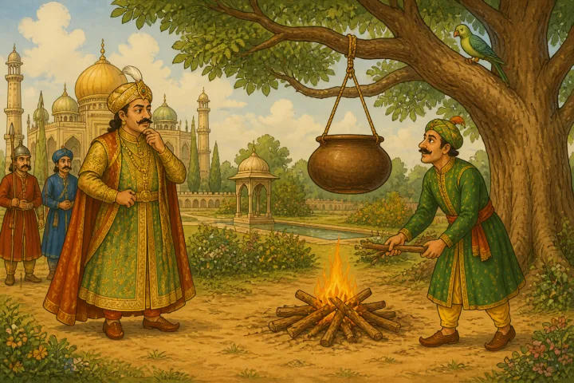
The King who came by that way asked Birbal, “ What are you doing Birbal?” For this, Birbal replied, “ Maharaja, I am cooking Khichdi.”
Surprised, the king said, “ But the pot is too distant from the fire! How will it get cooked?”
The witty Birbal was waiting for this question from the King. He said, “ My Lord, when a poor man standing in a chilled lake can get the warmth from a distant lamp, why wont my Khichdi cook from this distant fire?”
Akbar realized what Birbal meant. He accepted his mistake, called the farmer to the court, and gifted him the prize money as announced.
Moral of this Akbar Birbal story: If you think someone in high power is wrong, wait for the correct instant to tell them the same. Use some wise method so that they will realize their mistakes on their own.
Birbal is the rooster
This story of Akbar Birbal is not much known to many.
Akbar and Birbal stories are mainly popular because Birbal is the loyalist to King Akbar. Everyone in the court knew this and some were even envious of Birbal for the same reason.
It once happened that Akbar wanted to say to Birbal that he is not loyal. For this he planned something. He called all the members of his court and told them to carry an egg the next day in their robes and bring it to the court.
The next day, everyone did so. When the court began, King Akbar announced, “I order all of you to go into the royal garden and fetch one egg every one of you.”
Immediately, all of them went into the garden and took out the eggs they have been hiding. They brought them back to the king and showed them to him.
But Birbal did not find any egg in the garden. He thought for a while and understood that this is King’s plan. He then thought of an idea.
He came to the court shouting like a rooster. “ cock-a-doodle-doo cock-a-doodle-doo!”
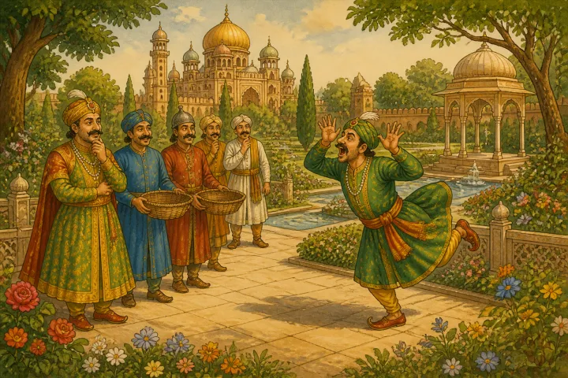
Everyone as well as the King was surprised and burst into laughter. The king later asked, “ What is this Birbal?” Then Birbal said, “ Maharaja, these are all hens.So they went into the garden and laid eggs. But I am a rooster, I cannot lay eggs!”
The king was again pleasantly surprised by Birbal’s answer.
Moral of this Akbar Birbal story: Think positively all the time and come up with innovative thoughts to solve any problem.
Respect or fear
This is a popular Akbar Birbal story.
The Great King Akbar was always in thought that his people always respected him. He always used to say the same to Birbal. One evening when Akbar Birbal was walking in their garden, the King told this again.
Birbal wanted to tell that not all respected him but feared him only. So he thought of a plan.
Birbal said, “ Dear King, announce that you want to collect a glass of milk from each house for some purpose.” The king made a similar announcement. He ordered everyone to get one big glass of milk and put it in the huge vessel in the court.
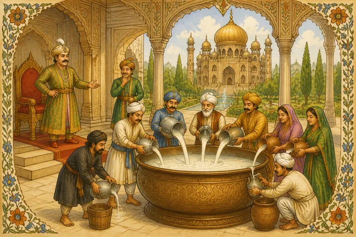
The next day, everyone brought glasses and started emptying them into the vessel placed in the court. Akbar was a happy man. He looked at Birbal and said with eyes seeing how many people have come on my order.
Birbal just smiled and kept calm. At the end of the day, when the King looked into the vessel it was watery! No sight of thick milk at all. Looks like everyone poured water into it. The king was disappointed at this.
Then Birbal guided, “ Maharaja, please announce tomorrow asking them to bring one more glass of milk each and tell that you will supervise each one pouring milk into the vessel.”
The king did the same. The next day everyone brought milk with fear as the king will himself supervise. At the end of the day, the big vessel was full of creamy milk!
Then Birbal said, “ Now will you agree, my Lord, that people respect you but they fear you more!!”
Moral of this Akbar Birbal story: Fear makes things done with ease.
Groundnut and peels
This is a fun-filled Akbar Birbal story that includes the Queen too.
Once a farmer offered his groundnut harvest to King Akbar. The royal chef boiled them in seasoned water and served the whole groundnuts to King Akbar and his Queen who were relaxing in the royal garden.
Then they both started eating the groundnuts by peeling them. The queen wanted to make fun of the King and started dumping them on the King’s side. To the onlookers, it appeared that the King ate many and the queen ate none.
In the meanwhile, Birbal came to greet the King. He observed that both the King and Queen are relaxing in the garden. He wished them both heartily.
Then the queen said, “ Come Birbal, please join us in relishing these boiled groundnuts. See, your King has eaten many. Look at the pile of the peels at his side.”
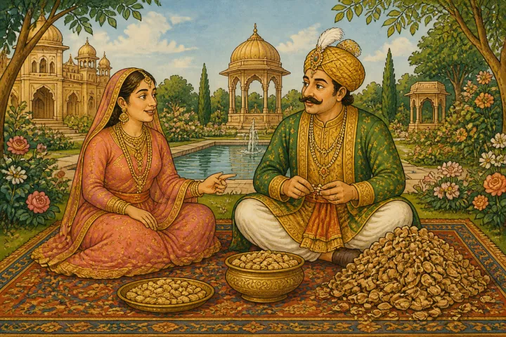
Birbal looked at them and understood that this is Queen’s style of fun making. He said, “ It’s true that the groundnuts are tasty. So the king ate many. But you ate them along with the peels too, yes indeed they might be tasty!”
All the three busted into laughter.
Moral of this Akbar Birbal story: Wit can make anything light.
Only one tough question
This is another famous Akbar Birbal story heard in many versions and styles.
In the times of Akbar Birbal, scholars used to travel to Kingdoms and prove their knowledge. They used to defeat the scholars of the kingdom and win money and gold and other offerings from the rulers.
Similarly, one scholar came to the court of Akbar. He said, “ I know more than everyone here. You can ask me anything and should be ready to answer whatever I ask. Oh King is there anyone in your kingdom who can meet my challenge?”
Now, this is a prestige issue for the King. He has to prove that his men are equal to this scholar. So, he thought of none other than Birbal and summoned him to the court.
The scholar said to Birbal, “ Do you want me to ask you one tough question or 100 easy questions?” Birbal thought and replied, “Please ask me only one tough question.”
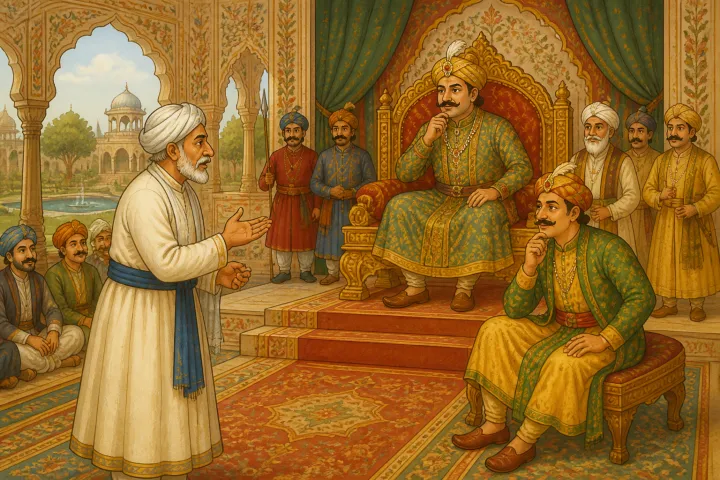
The scholar asked immediately, “ Which is the first? The egg or the hen?”
Birbal instantly answered, “ The hen ”
The scholar asked again, “ How do you know?”
Birbal replied, “ Oh great scholar, you said you will ask me only one tough question. Why are you asking the second question now?”
The scholar realized the wit of Birbal and accepted his defeat.
Moral of this Akbar Birbal story: Thinking with the presence of mind can beat any challenge.
Potful of wit
This Akbar Birbal story, not many of us know.
Akbar and Birbal are close to each other. But sometimes, the King gets angry and orders that Birbal is not seen by him.
It happened once that King got angry at Birbal. He ordered him not to show his face and leave the kingdom. Birbal obeyed the King and left the kingdom and stayed in a nearby village.
But soon the king started to feel the absence of Birbal. After all, he was his close aide and always was on his side. He wanted Birbal desperately back. But does not know where he is right now.
So the King thought of a plan. He ordered to all village heads that they should send him one pot of wit in three months from now. The message reached the village heads. Everyone was surprised how to send a pot of wit!
In one village where Birbal was hiding, the village head made this announcement. Birbal who heard the announcement understood King’s plan. He came forward and said, “ we can do this, oh Head”.
He asked for a pot and put in it a budding watermelon without separating it from the vine. In three months, it grew to the pot full. Then they cut the creeper and sent the pot to the King.
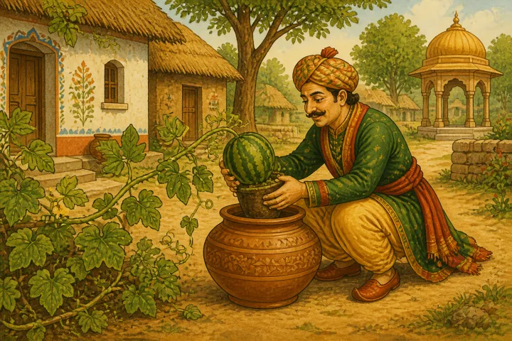
The King on receiving the pot understood that no one else than Birbal could do this. He enquired from which village this pot came and sent his soldiers to search for Birbal and bring him back.
Moral of this Akbar Birbal story: We do not know the value of someone who is close to us till we lose them.
Ring thief
Akbar Birbal stories tell us how to solve problems in an easy way without creating a big fuss. This ring thief story from the Akbar Birbal stories collection is one such.
Once the ring of king Akbar got stolen. No one else than the people inside the palace can do that. So Birbal thought of an idea to find the thief.
He summoned everyone working in the palace to the court. He announced, “ The ring thief is among us right now. But the thing that the thief does not know is that there is a piece of stick attached to his beard while stealing the ring.”
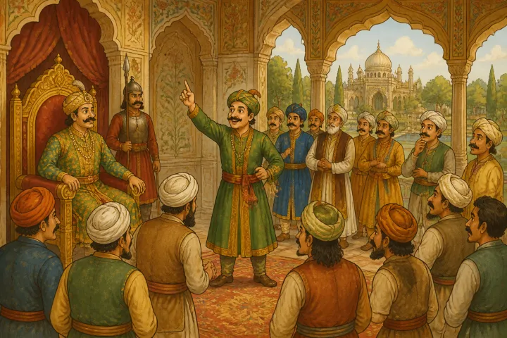
Everyone started looking at each other’s beards to find the stick attached. But one person immediately checks his beard to see if there is any stick as Birbal mentioned. And he was caught by Birbal.
Birbal said, “ Your guiltiness only got you caught!”
Moral of this Akbar Birbal story: Even though a thief tries to remain calm, his conscience will get him caught someday.
Shorten the King
Akbar Birbal is really a famous pair. Their humor and sense of wit is a great lesson for the modern man who is in search of solutions to problems. Not surprisingly all the stories of the Akbar Birbal collection have tons of fun and useful lessons for all of us.
Here is one such story that explains Birbal’s wit once more.
Once Akbar wanted to test who is knowledgeable from among his court people. He brought a cloth that is lesser than his height. He ordered, “ Each one of you should come and try to cover me fully in this cloth.”
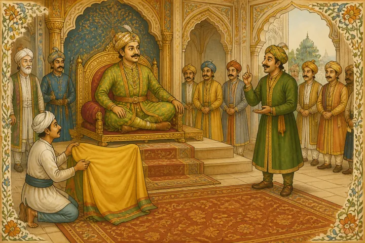
One by one everyone was coming. But no one could win as the cloth was really shorter than King’s height.
At the last when Birbal’s turn came, he wished the King and requested him, “ Oh King can you please cross your legs and fold them?” Then surprisingly the cloth was sufficient enough to cover him.
Everyone in the court realized why Akbar loves Birbal and appreciated him with their applause.
Moral of this Akbar Birbal story: A sharp mind can answer any tough problem.
Moustache and the culprit
Once Akbar announced in his court. “ Someone played with my moustache yesterday and plucked a hair from it.”
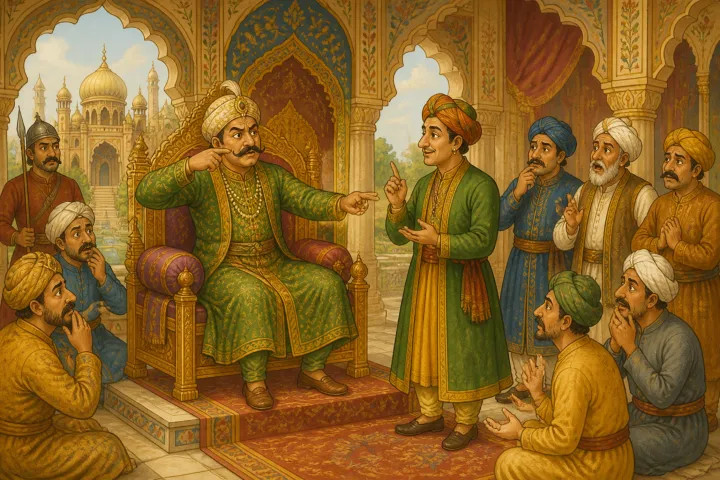
For this, everyone was scared. They were thinking who it might be and shivered in fear. They started saying, “ hang the culprit”, “punish the culprit”, “beat the culprit ”.
Only Birbal remained calm. The King asked Birbal, “ Why are you not saying anything Birbal?”
Then Birbal gave a smile and said, “ Maharaja, none other than your grandson can play in your arms and touch your moustache. I would indeed give my kisses to that cute culprit for plucking a hair from your moustache!”
Everyone including the King was surprised by the far-sighted thinking of Birbal. They understood what made Birbal different from them and appreciated him with heavy applause.
Moral of this Akbar Birbal story: Before taking a decision, who has to think from all sides of the story.
Whose baby is it?
This Akbar Birbal story is told in many variations.
Once two women approached King Akbar with a dispute that they own a baby. They both claimed that both are mothers and wanted to get the baby equally. This looked like a tough case to Akbar.
He called Birbal and asked to solve the case. Birbal then turned to the women and said, “ Oh women, I agree that both of you are the mothers of this baby. I do not want to deny justice to any one of you. Let me cut the baby into half and distribute to you both equally.”
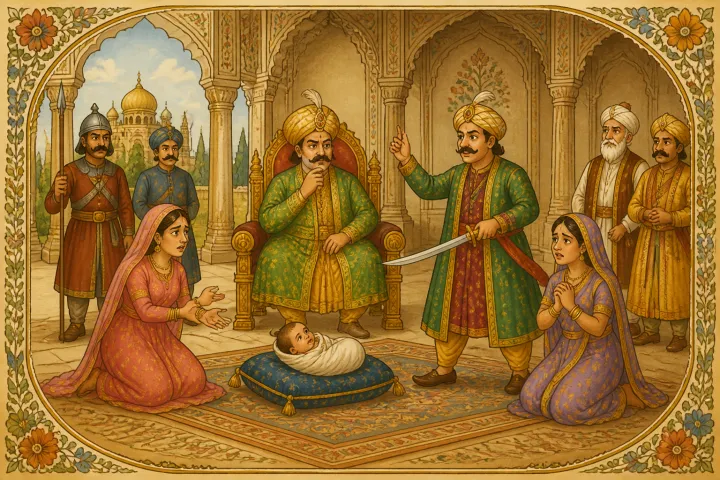
Everyone in the court including the King was astonished. One of the women from the two who came for justice started crying endlessly. She fell on the feet of Birbal and requested not to kill the baby at any cost. She said she is ready to leave the baby but pleaded with him not to do any harm to it.
Then Birbal turned to the court and the King and said, “ My Lord, she is the real mother of this baby. That’s the reason she could not bear the thought of any harm to this baby.”
Saying this he handed the bay to that woman and ordered the other woman to be punished.
Moral of this Akbar Birbal story: Mother’s love is unmatchable.
The Divine Rabbit
Once there came a hunter to the court of King Akbar. He brought a rabbit along with him. The rabbit was glowing in vibrant colors, unlike normal rabbits that appear white.
The hunter told the King, “ Jahapanah, when I was in the forest yesterday, I found this vibrant colored rabbit. I showed it to my great grandfather who had spiritual powers. He observed this rabbit and found that this has Divine powers. He suggested to give it to you, the Great Emperor, so that the whole kingdom will flourish.”
Emperor Akbar was more than pleased. He never saw such a vibrant rabbit in his life. He trusted that the rabbit really had divine powers. Akbar thought of gifting the hunter with a pouch of gold coins for his act.
Noticing this, Birbal said to Akbar, “ Jahapanah, the rabbit came straight from the forest. It appears to have some dirt. Shall we get it bathed and gift the hunter later on?”
Listening to this, the hunter’s face turned pale.
Birbal ordered the helpers to bring a small tub of water for the rabbit to take a bath. He dipped the rabbit in the tub. Viola! All the colors it had gone! It turned white just like any other normal rabbit.
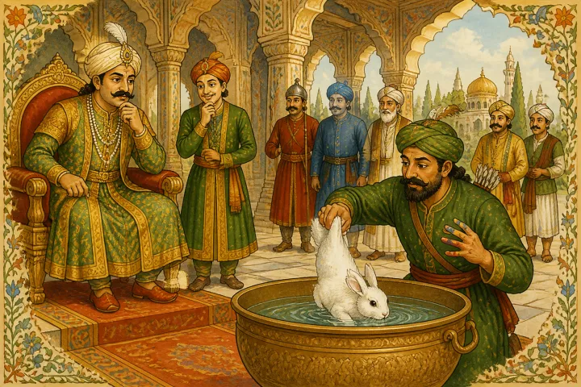
Cleaning it neatly, Birbal said, “ My Great King, this hunter painted the rabbit with colours and thought to sell to you for a higher price in greed.”
Observing all this, Akbar got angry. He summoned the hunter to be punished. Then the soldiers took him away. He was surprised how Birbal found out that the rabbit was painted. He asked Birbal the same question.
Birbal replied, “ My King, the colours were still on the fingers of the hunter. That’s how I found that he painted this rabbit.”
The king appreciated his observation and gifted Birbal with 100 gold coins. Then, they set the rabbit free into the royal gardens.
Moral: Observation is important.
Freedom is beautiful
The royal garden of King Akbar is huge and beautiful. It consisted of the best of the trees and birds brought from various countries and taken immense care.
Once King Akbar and his aide Birbal were taking a stroll in the royal lawns on a beautiful evening. The sky was pleasant. All the birds were returning to their nests. Seeing the birds fly freely, Akbar said, “ Look at those poor birds Birbal. They need to go in search of food daily despite sun and rain. Look at my birds in the garden happily in their golden cages. We provide them the best of the food and take care of them all the time.”
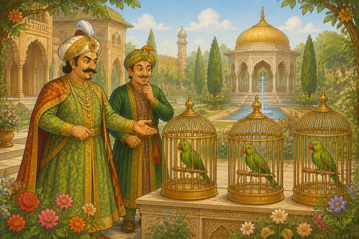
Birbal knows that the King is not fully correct. He requested the king, “ May I open the cage of your beautiful green parrot My Lord?”
Akbar gave permission. When they opened the cage, to their surprise the bird was not flying out of it. Then Birbal held it carefully with his hands and tried to leave it in the sky. But, it did not even make an attempt to fly. Instead, it fell to the ground instantly. Looking at this, the King was puzzled. He thought there was a health problem for the parrot. He told the same to Birbal.
Birbal replied, “ Maharajah, it is the nature’s design that birds should fly and gather their food. They get freedom by flying. We kept this beautiful bird in the cage and provided it with food. But we have taken away its freedom. The bird lost its nature and forgot how to fly at last!”
The Kind was saddened to hear this. They took the bird into their hands, got it the good treatment from the Royal doctor. Soon, it was back to its normal state. Then they left it to fly free into the sky!
Moral: A life without freedom is of no use.
The Disguised King
It was a norm for the Kings in those days to go on a disguise and inspect the happenings in the Kingdom. Thus, Akbar also used to do this practice. He always used to go alone in disguise and observe his people.
But Birbal thought this is not a safe practice for him. He suggested the King many times to take some soldiers also in disguise. But Akbar would not listen.
One day when King Akbar was in disguise as a village man.
While walking on the streets of a village in his kingdom, a bearded man came to him. The man asked the disguised King, “Hey, who are you? What are you doing here in our village?”
The disguised King said, “ I am a nomad. I live by doing small works. I have the right to live here without causing any problem to you.”
The bearded man said, “Yes you may live, but you have no right to steal our King’s ring.”
Saying this, the man dragged the King’s hand and pulled out the Golden Ring, and ran away. The King was taken aback.
The next day, he shared this incident in court. Everyone was surprised about the King being robbed in the daylight. Then Birbal came with the ring and said, “Jahapanah, it is me who came as a thief and robbed you. I wanted you to understand that going alone without soldiers is never safe for you!”
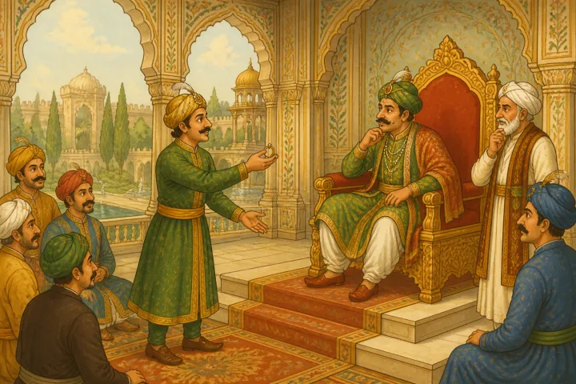
Akbar understood why Birbal was suggesting this. From then on, he never went alone in disguise. Moral: Pay attention to your wellishers’ advice.
The Greedy Potter
Once there lived a greedy and wicked potter in Akbar’s Kingdom. His neighbor was a washerman. He had a donkey. Once the donkey broke the pottery made by the potter. As compensation, the washerman, though poor, paid the potter for his loss.
But this did not satisfy the greedy potter. He wanted the washerman to get punishment from Akbar.
The next day, he went to the royal court. He said Maharajah, one of my relatives was saying that in their land the elephants are white!
This surprised Akbar. He ordered that all elephants in his kingdom be washed cleanly. He allotted the task to the washerman, the neighbor of the greedy potter.
The next day, the washerman showed the elephants to the King. The King asked, “ Why are they not white?” For this, the washerman answered, “Maharajah, how much ever I wash they are not turning white. How can I turn a grey elephant into white?”
Then Birbal whispered an idea in his ear. Accordingly, the washerman requested Akbar. “If the potter can make a huge bathtub for the elephant, it will help me to give him a bath to make him white.”
Then Akbar ordered the same to the potter. The potter made a big bathtub for the elephant. But as soon as the elephant stepped in it, it broke! This angered Akbar. He ordered the potter to make a stronger one and left. The potter cursed himself for being greedy and wanted to do bad deeds for the honest washerman.
Moral: Never be greedy or think about doing bad to others.
Conclusion
Akbar Birbal stories tell us many great aspects of dealing with life’s problems in a simple way. If you carefully observe these Akbar Birbal stories for kids in English, you will see that they are short yet message driven.
This is what we need exactly in this world. Where children are into digital devices and losing touch with nature and the good old days, they should know how to tackle the tricky situation in life with the help of such wit and presence of mind. And this is easily achievable by sharing Akbar Birbal stories with children.
We hope you enjoyed our Akbar Birbal story collection. Know any other story than these? Please let us know in the comments. We shall be happy to add them to serve better to our readers who are looking for a good collection of Akbar Birbal stories. Happy reading!
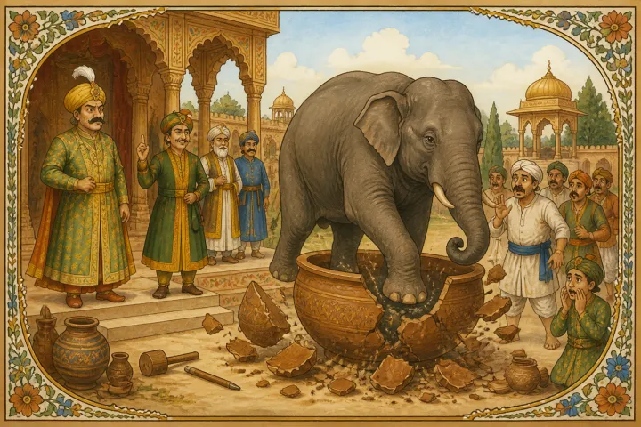